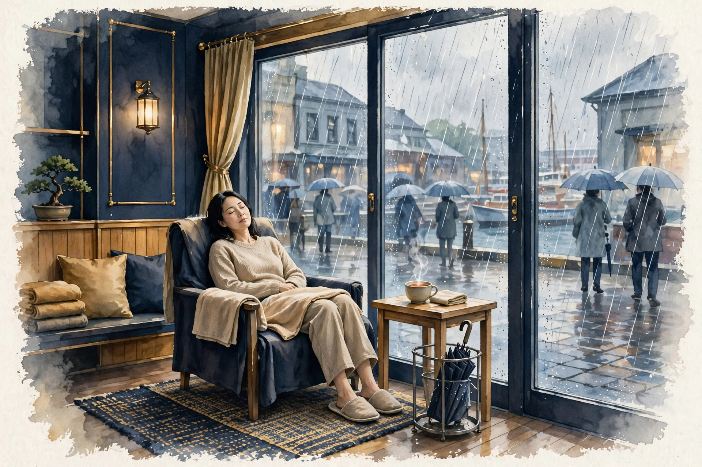

三ノ宮で雨の日に気になる体の重だるさ｜低気圧の日の過ごし方とセルフケア、受診の目安セルフケア

雨が降る日や低気圧が近づく日に、体が鉛のように重く感じたり、腕や脚まで重だるく感じたりする方へ。雨の日・低気圧の日に目立ちやすい体の重だるさについて、一般的な解説と考えられる要因、その日の過ごし方とセルフケア、受診の目安を整理しました。
体の重だるさとは — 雨の日・低気圧の日に気になりやすい全身の重さ
体の重だるさは、全身や体の一部が重く、だるく感じる状態を指す、日常的によく使われる言葉です。感じ方には、体が鉛のように重く感じる、腕や脚を持ち上げるのが億劫に感じる、背中から腰にかけて重さが残る感じがする、朝起きても体の重さが抜けにくい、といった表れ方があり、程度には個人差があります。雨の日や低気圧が近づく日には、「朝、布団から出ても体が沈むように重く感じる」「家事をしていると腕まで重くなってきて、途中で座り込みたくなる」「家で座って過ごした日は、夕方になると脚まで重だるく感じる」「晴れた日は気にならないのに、雨の日だけ体の重さが目立つ気がする」といった声を聞くことがあります。一般的な体のだるさは、前日の疲れや眠りの浅さと重なって感じられることが多いとされますが、雨の日の体の重だるさは、気圧や湿度といった天気の変化や、その日家の中で過ごす時間の長さと重なって感じられやすい点が特徴とされます。なお、全身のだるさ全般についてはブログ記事三ノ宮で雨の日に気になる体のだるさ｜低気圧の日の過ごし方とセルフケア、受診の目安、雨の日に重なる目の疲れ感についてはブログ記事三ノ宮で雨の日に気になる目の疲れ感｜低気圧の日の過ごし方とセルフケア、受診の目安、頭の重さについてはブログ記事三ノ宮で雨の日に気になる頭の重さ｜低気圧の日の過ごし方とセルフケア、受診の目安、肩こりについてはブログ記事三ノ宮で雨の日に気になる肩こり｜低気圧の日の過ごし方とセルフケア、受診の目安も公開しています。この記事では場面を雨の日・低気圧の日に、感じ方を「重だるさ」に絞って眺めます。ここでは原因を一つに決めつけず、考えられる要因と雨の日の付き合い方を整理します。
関係する部位の目安は、図1のとおりです。
図1｜雨の日に重く感じやすい首・肩・脚（正面）

考えられる要因
要因は一つとは限りません。気圧が下がる日は、体の内側と外側の圧のバランスが変わり、体がそれに合わせようとして働くことが、全身の重さやだるさとして表れる場合があるとされます。緊張と休息の切り替えに関わる自律神経のバランスの変化として語られることもあり、感じ方には個人差が大きいとされます。湿度の面では、雨の日は湿気が多く、汗が乾きにくく体温の調整に負担がかかりやすいこと、反対に冷たい雨や濡れた衣服で体が冷えることも、重さと重なって感じられることがあります。過ごし方の面では、雨の日は家の中で過ごす時間が長くなりやすく、座ったまま・横になったままの姿勢が続くことで、背中や腰、脚まわりの重さとして感じられる場合もあるようです。家事の場面では、洗濯物を室内に干すときの腕の上げ下げや、濡れた床の掃除で中腰になる姿勢が重なることもあります。外出の場面では、傘や荷物で片手がふさがり、濡れないように気をつけながら歩くことで、肩や首に力が入りやすいことも挙げられます。日差しが少ないことで朝の目覚めのリズムが作りにくいこと、前日までの疲れや眠りの浅さが重なることも、感じ方に関わる場合があるようです。東洋医学では、湿気の多い時期の体の重さは、体内の「水」の巡りや気・血の巡りのバランスの変化として捉えられてきました。体のだるさそのものの考え方は体のだるさのお悩み別ケアページ、雨の日の体の重さについては雨の日の体の重さのお悩み別ケアページ、脚のむくみ感については脚のむくみのお悩み別ケアページ、緊張と休息の切り替えについては自律神経の乱れ感のお悩み別ケアページにもまとめています。その日の天気と、体の重だるさを感じた時刻や場面を簡単にメモしておくと、ご自身のパターンを眺める参考になります。
雨の日に取り入れられるセルフケア
まずは雨の日の過ごし方の小さな工夫から始めてみてください。朝の整え方では、曇りや雨でもカーテンを開けて外の明るさを取り入れ、温かい飲み物や朝食を抜かずに済ませることが、一日のリズムを作る工夫の一つです。体を動かす面では、家の中でも席を立って背伸びをする、肩を大きくゆっくり回す、胸を開いて深呼吸をする、足首をゆっくり回す、かかとを上げ下げするといった小さな動きを挟むと、同じ姿勢が続いた体を動かすきっかけになります。体を温める面では、温めたタオルを首の後ろや腰に当てる、濡れた衣服や靴下は帰宅後に早めに着替えて足元を冷やさない、といった過ごし方が日常で取り入れやすいケアです。帰宅後はシャワーで済ませず湯船につかり、首元や腰まわり、ふくらはぎまで温める過ごし方もあります。脚が重く感じる日は、脚を少し高い位置に置いて休む時間を作ることも考えられます。水分は一度にまとめてではなくこまめにとることも、意識しやすい過ごし方です。雨の日の夜は、照明を少し落として早めに休む準備をし、寝る前のスマートフォン時間を短くすることも、翌日に向けた工夫とされます。眠りについては眠りの浅さのお悩み別ケアページ、夜の過ごし方についてはブログ記事よく眠るための夜の工夫｜照明・入浴・スマホとの距離の取り方、冷えについては冷えのお悩み別ケアページもあわせてご覧ください。体は強く押したり、痛みを我慢して動かしたりせず、気持ちよい範囲にとどめることが続けるうえでの目安になります。無理のない範囲で、一つか二つ選ぶところから始めてみてください。
セルフケアで意識したい場所の目安は、図2のとおりです。
図2｜帰宅後の入浴で温めたい背中・腰・ふくらはぎ（背面）

受診の目安
体の重だるさが天気の良い日も含めて数週間以上続く、または少しずつ強くなっている、強い頭痛やめまい、吐き気を伴う、動悸や息苦しさ、胸の痛みがある、手足のしびれや力の入りにくさがある、発熱がある、むくみが急に強くなった感じがする、眠れない日が続いて日常生活や仕事に支障が出ている、気持ちの落ち込みが続く——こうした場合は、自己判断で様子を見続けず、内科などの医療機関への相談をご検討ください。体の重だるさは、さまざまな体の変化で表れる場合もあるとされるため、原因を一つに決めつけずに相談することが目安になります。当店の施術はリラクゼーションを目的としたもので、症状の診断・治療を行うものではありません。気になる症状があるときは、まず医療機関で相談したうえで、日常のケアの一つとしてサロンのご利用をお考えください。
三ノ宮で、雨の日に体の重だるさが気になる日に体を休める時間を
ステラスピカは神戸・三ノ宮エリアの女性専用サロンです。営業時間は月〜土17:00〜22:00（日曜休み・完全予約制）で、雨の日の夕方から夜の時間帯にもご利用いただけます。雨の日は外出を控えがちになりますが、夕方の時間を体を休める時間にあてる方がいらっしゃいます。完全個室でご案内します。オイルマッサージ／美容整体は90分10,000円（税込）で、施術歴30年のセラピストが、その日の体調や気になるお悩みをうかがいながら、その日の状態に合わせて無理のない圧と内容で全身をケアする施術を組み立てます。施術では、首・肩・背中から腰、脚へ、つながりを意識しながら丁寧にほぐしていきます。雨の日は移動だけでも体力を使いがちですので、ご来店の際は時間に余裕を持ってお越しください。なお、ステラスピカは近日開院予定のため、ご予約の受付はまだ開始していません。受付開始はこのページでご案内します。料金やメニューの詳細はメニュー・料金、開院後のご予約の流れはご予約・お問い合わせをご覧ください。
ステラスピカ（三ノ宮） — 女性専用、90分 10,000円、月〜土17:00〜22:00、完全予約制です。